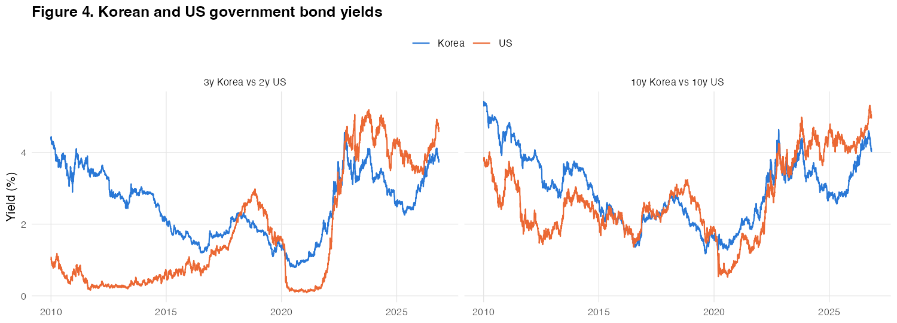
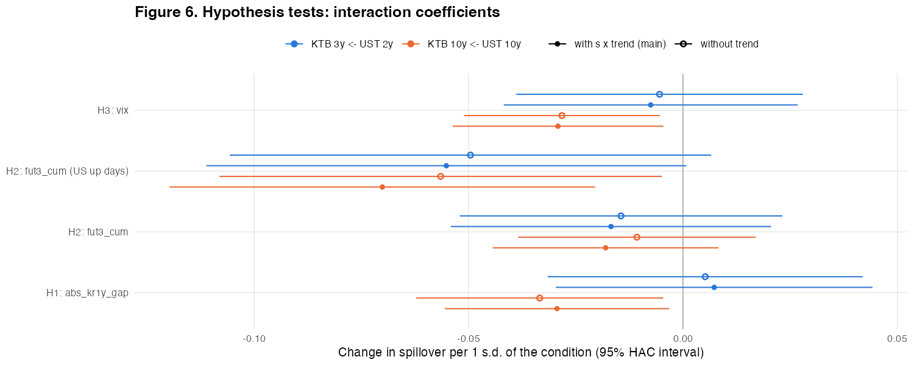
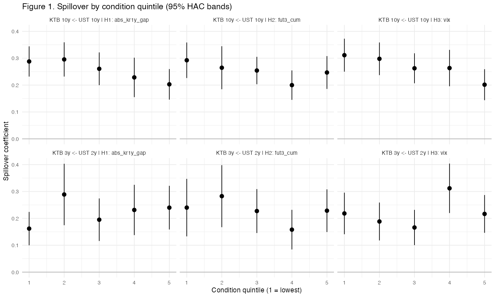
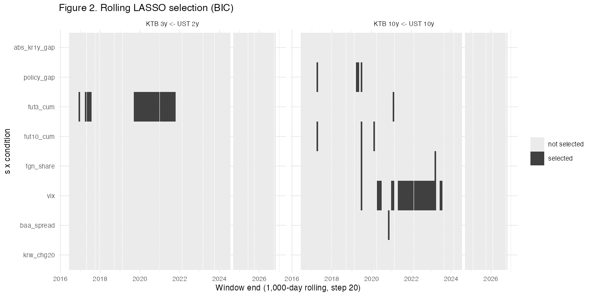
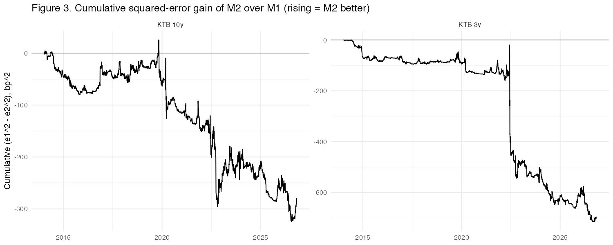
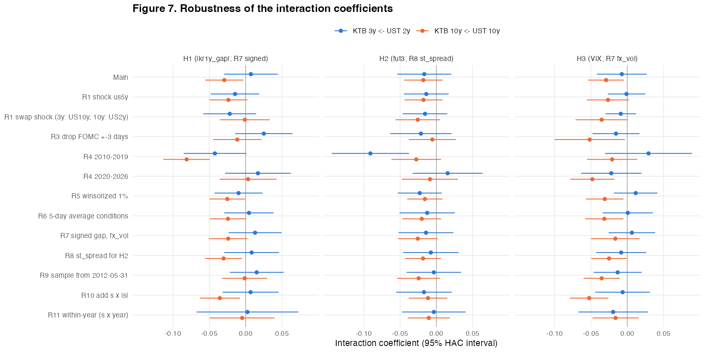

When Do US Yields Cross the Pacific? · 금융계량경제학 기말 프로젝트 · 2026-11-20 · 표본 2010-01-04 ~ 2026-10-30, 거래일 쌍 4,140개
연구 질문: 간밤 미국 금리 충격이 다음 날 국고채로 더 세게 넘어오는 날은 어떤 조건일 때인가?
모형: Δy(t+1) = α + (β0 + Σj βj zj(t) + βm mon(t))·s(t) + Σj γj zj(t) + γm mon(t) + ρΔy(t) + δ′D(t) + [trend, s×trend] + ε. Δy는 한국 t일 종가 → t+1일 종가 변화(bp), s(t)는 한국 t일 마감 뒤 t+1일 개장 전에 끝난 미국 거래일 변화의 합(bp), z는 t일 마감 때 알려진 조건(표준화)이다. mon(t)는 충격의 성격이다. s(t)와 같은 미국 거래일들의 NASDAQ 수익률이 s(t)와 부호가 반대면 1(통화정책형), 같으면 0(성장형)이다. 가설이 아니라 통제로 넣었다. 표준오차는 Newey–West(시차 9)이다.
| 가설 | 대표 조건 | 원래 예측 |
|---|---|---|
| H1 기대 경로 | |국고채 1년 − 기준금리| | 전이 확대 (+) |
| H2 수급 경로 | 외국인 3년 국채선물 누적 순매수 (250일 z) | 미국 금리 상승일 전이 확대 (+) |
| H3 위험 경로 | log VIX | 전이 확대 (+) |
변수 확정: 대표 변수 3개는 결과를 보기 전에 정했고 바꾸지 않았다. 선행연구 검토(「조건별전이_변수확정_선행연구.md」)에 따라 LASSO 후보를 13개에서 8개(|kr1y_gap|, policy_gap, fut3_cum, fut10_cum, fgn_share, log VIX, baa_spread, krw_chg20)로 줄였고, 충격 성격(mon)을 통제로 추가했다. mon의 효과는 넣기 전에 한 번 확인했다.
미리 정한 설정: 모든 검정은 양측이다. 전이 계수가 기간에 따라 커지므로 가설 모형과 LASSO에는 trend와 s×trend를 통제로 넣었다(추세 없는 결과도 함께 보고). 단위근 검정에서 I(1)로 나온 조건 policy_gap, fgn_share, baa_spread, st_spread은 250일 이동 z점수로 바꿨다. 다중검정은 가설 3개 × 만기 2개 = 6개에 Holm 보정을 한다.
한국 거래일 쌍 4,140개(2010-01-04 ~ 2026-10-30). 출처는 ECOS, FRED, 뉴욕 연은, KRX, 금융감독원이고 전처리 규칙은 「조건별전이_데이터전처리.md」에 있다.

| 변수 | n | 평균 | 표준편차 | 최소 | 최대 | 첨도 |
|---|---|---|---|---|---|---|
| Δ국고채 3년 (bp) | 4,140 | -0.02 | 3.86 | -26.80 | 34.90 | 11.1 |
| Δ국고채 10년 (bp) | 4,140 | -0.03 | 4.09 | -22.00 | 32.10 | 6.5 |
| 충격 s: 미 2년 (bp) | 4,140 | 0.08 | 4.60 | -57.00 | 34.00 | 15.3 |
| 충격 s: 미 10년 (bp) | 4,140 | 0.03 | 5.40 | -30.00 | 29.00 | 5.0 |
| |kr1y_gap| (%p) | 4,140 | 0.26 | 0.24 | 0.00 | 1.50 | 5.9 |
| fut3_cum (z) | 4,140 | 0.11 | 1.33 | -3.28 | 3.28 | 2.3 |
| log VIX | 4,140 | 2.86 | 0.31 | 2.21 | 4.42 | 4.0 |
금리 변화의 첨도가 높아(두꺼운 꼬리) 견고성 R5에서 1% 윈저화를 확인한다.
| 만기 | β₀ | HAC t | ρ (전날 Δy) | R2 | n | β⁺ (미 상승) | β⁻ (미 하락) | β⁺=β⁻ p |
|---|---|---|---|---|---|---|---|---|
| 3년물 (← 미 2년) | 0.291*** | 16.7 | -0.068 | 0.123 | 4,140 | 0.294 | 0.288 | 0.911 |
| 10년물 (← 미 10년) | 0.296*** | 19.2 | -0.077 | 0.154 | 4,140 | 0.279 | 0.312 | 0.494 |
*** p<0.01. D = 연휴 뒤 첫날, 미국 휴장(s = 0), FOMC, 금통위 더미.
전이 계수는 두 만기 모두 약 0.3이고, 상승·하락 충격에 대칭이다. 다만 아래 그림처럼 시기에 따라 크게 움직인다. 3년물은 2013년 테이퍼 텐트럼 무렵 0.6까지 올랐고, 10년물은 2010–11년 0에 가까웠다가 2023년 이후 0.4–0.5로 높아졌다. 구조변화 sup-Wald 검정은 3년물 2022-03-17(p <0.001), 10년물 2012-08-09(p <0.001)을 변화 시점으로 잡는다. 10년물 시점은 탐색 구간의 시작점이라 2010–11년의 낮은 전이를 반영한 것으로 본다.
| 만기 | 통화정책형 비율 | 성장형 β | 통화정책형 β | 차이 | 차이 t | mon–VIX 상관 |
|---|---|---|---|---|---|---|
| 3년물 (← 미 2년) | 44.0% | 0.243 | 0.344 (0.031) | 0.101** | 2.2 | -0.005 |
| 10년물 (← 미 10년) | 43.3% | 0.238 | 0.381 (0.027) | 0.144*** | 4.4 | -0.023 |
기준 모형에 mon과 s × mon을 추가. 통화정책형 = 미국 금리와 NASDAQ이 같은 기간에 반대로 움직임. 괄호는 HAC 표준오차(델타법). *** p<0.01, ** p<0.05.
미국 금리 상승이 주가 하락과 함께 오면(통화정책형) 한국으로 더 많이 넘어온다. 10년물은 차이가 0.14로 성장형 대비 약 60% 크다. Hoek, Kamin & Yoldas(2022)가 신흥국에서 보인 결과와 같은 방향이다. mon은 VIX와 거의 상관이 없어서, 아래 조건 효과와 따로 성립한다. 가설 모형에도 mon과 s × mon을 통제로 넣었다.
세 대표 조건을 한 식에 함께 넣어 경쟁시켰다. 계수는 조건이 1 표준편차 높을 때 전이 계수가 얼마나 바뀌는지다(기준 전이 계수: 3년물 0.229, 10년물 0.270). Holm 보정은 H1, H2(s⁺), H3 × 2개 만기의 6개 검정에 적용했다.
| 3년물 (← 미 2년) | 10년물 (← 미 10년) | ||||||||
|---|---|---|---|---|---|---|---|---|---|
| 상호작용 | 예측 | 계수 | SE | p | Holm p | 계수 | SE | p | Holm p |
| H1 s × |kr1y_gap| | + | 0.007 | (0.019) | 0.699 | 1.000 | -0.029** | (0.013) | 0.028 | 0.111 |
| H2 s × fut3 (대칭) | -0.017 | (0.019) | 0.378 | -0.018 | (0.013) | 0.180 | |||
| H2 s⁺ × fut3 (미 상승일) | + | -0.055* | (0.029) | 0.053 | 0.160 | -0.070*** | (0.025) | 0.006 | 0.034 |
| H2 s⁻ × fut3 (미 하락일) | 0.024 | (0.035) | 0.492 | 0.033 | (0.024) | 0.158 | |||
| H3 s × log VIX | + | -0.008 | (0.017) | 0.667 | 1.000 | -0.029** | (0.013) | 0.020 | 0.100 |
| 통제 s × mon (충격 성격) | 0.087* | (0.048) | 0.069 | 0.099*** | (0.033) | 0.003 | |||
괄호는 Newey–West 표준오차. 양측 p값. *** p<0.01, ** p<0.05, * p<0.1. H2의 공식 검정은 s⁺ × fut3이다(연구개요 4-2). mon은 0/1 더미라 s × mon은 통화정책형 충격일 때 전이 계수의 차이다.
| 3년물 (← 미 2년) | 10년물 (← 미 10년) | ||||||||
|---|---|---|---|---|---|---|---|---|---|
| 상호작용 | 예측 | 계수 | SE | p | Holm p | 계수 | SE | p | Holm p |
| H1 s × |kr1y_gap| | + | 0.005 | (0.019) | 0.782 | 1.000 | -0.033** | (0.015) | 0.023 | 0.115 |
| H2 s × fut3 (대칭) | -0.014 | (0.019) | 0.452 | -0.011 | (0.014) | 0.448 | |||
| H2 s⁺ × fut3 (미 상승일) | + | -0.050* | (0.029) | 0.084 | 0.251 | -0.057** | (0.026) | 0.032 | 0.128 |
| H2 s⁻ × fut3 (미 하락일) | 0.024 | (0.036) | 0.498 | 0.034 | (0.025) | 0.171 | |||
| H3 s × log VIX | + | -0.005 | (0.017) | 0.749 | 1.000 | -0.028** | (0.012) | 0.015 | 0.092 |
| 통제 s × mon (충격 성격) | 0.099** | (0.047) | 0.034 | 0.144*** | (0.031) | <0.001 | |||
읽는 법

| 만기 | 가설 | 조건 | 분위 | 전이 계수 | 95% 구간 |
|---|---|---|---|---|---|
| 10년물 | H1 | abs_kr1y_gap | 20% | 0.331 | [0.298, 0.364] |
| 10년물 | H1 | abs_kr1y_gap | 80% | 0.292 | [0.264, 0.320] |
| 10년물 | H2 | fut3_cum | 20% | 0.325 | [0.289, 0.362] |
| 10년물 | H2 | fut3_cum | 80% | 0.292 | [0.259, 0.325] |
| 10년물 | H3 | vix | 20% | 0.333 | [0.299, 0.366] |
| 10년물 | H3 | vix | 80% | 0.285 | [0.255, 0.315] |

| 만기 | 가설 | 조건 | b5 − b1 = 0 p |
|---|---|---|---|
| 3년물 | H1 | abs_kr1y_gap | 0.114 |
| 3년물 | H2 | fut3_cum | 0.852 |
| 3년물 | H3 | vix | 0.971 |
| 10년물 | H1 | abs_kr1y_gap | 0.020 |
| 10년물 | H2 | fut3_cum | 0.299 |
| 10년물 | H3 | vix | 0.004 |
5분위 결과는 선형 상호작용보다 뚜렷하다. 10년물은 VIX가 높을수록 전이 계수가 1분위 0.31에서 5분위 0.20(으)로 줄고(p 0.004), |kr1y_gap|에서도 0.29에서 0.20(으)로 줄어든다(p 0.020). 3년물은 분위별로 들쭉날쭉하고 체계적인 차이가 없다.
2012-05-31 이후 표본에서 조건 8개의 상호작용에만 벌점을 주고 BIC로 λ를 골랐다. s, Δy(t), 더미, mon, s × mon, trend, s × trend와 조건 주효과는 벌점 없이 넣었다(설명변수 26개). 사후 추론은 하지 않고 어떤 경로가 선택되는지만 본다.
전체 표본에서는 두 만기 모두, LASSO와 Elastic Net 모두 상호작용을 하나도 고르지 않았다(표 4 생략). BIC 기준으로는 추세와 충격 성격을 통제한 뒤 조건 상호작용이 추가하는 설명력이 벌점보다 작다. 가설 모형에서 유의한 효과(10년물 H2 s⁺)도 크기가 작아서 데이터만으로 고를 정도는 아니라는 뜻이다. 변수 확정 전(후보 13개, trend·mon 없음)에는 baa_spread가 두 만기 모두 선택됐다. 확인해 보면 10년물의 baa_spread는 trend와 mon 중 하나만 넣으면 남고 둘 다 넣어야 사라진다. 3년물은 후보를 8개로 줄이는 것만으로 사라진다. 즉 이 선택은 설정에 민감하다.

| 만기 | 상호작용 | 선택 빈도 |
|---|---|---|
| 10년물 | vix | 25.4% |
| 3년물 | fut3_cum | 24.6% |
50% 이상이면 "안정적으로 선택"으로 보기로 했으나, 그런 항목은 없다.
롤링 창에서 안정적으로 선택되는 상호작용은 없다. 다만 선택될 때는 대표 변수가 선택된다. 10년물은 VIX(25%), 3년물은 fut3_cum(25%)이 가장 자주 선택된다. 그림 2에서 어느 시기에 선택됐는지 볼 수 있다.
1,000거래일 롤링 창으로 한국 t+1일 개장 직전(s(t)는 관측된 상태)의 Δy를 예측했다. M1·M2는 매일, M3(LASSO)는 20일마다 다시 추정했다. 첫 예측은 M1·M2가 2014-01-10, M3가 2016-06-22이다. 충격 성격(mon, s × mon)은 M1·M2·M3 모두에 넣었다.
| 만기 | 비교 | n | MSFE 1 | MSFE 2 | 표본외 R² | 방향 적중 2 | CW p | GW 무조건 p | GW 조건 p | DM p |
|---|---|---|---|---|---|---|---|---|---|---|
| 3년물 | M1 vs M0 | 3,140 | 14.14 | 12.04 | 0.149 | 58.6% | – | <0.001 | <0.001 | – |
| 3년물 | M2 vs M1 | 3,140 | 12.04 | 12.26 | -0.018 | 57.8% | 0.497 | 0.030 | 0.152 | – |
| 3년물 | M3 vs M1 | 2,509 | 13.92 | 14.09 | -0.012 | 58.7% | 0.408 | 0.042 | 0.018 | – |
| 3년물 | M3 vs M2 | 2,509 | 14.15 | 14.09 | 0.004 | 58.7% | – | 0.691 | 0.228 | 0.700 |
| 10년물 | M1 vs M0 | 3,140 | 16.93 | 13.60 | 0.197 | 62.5% | – | <0.001 | <0.001 | – |
| 10년물 | M2 vs M1 | 3,140 | 13.60 | 13.69 | -0.007 | 62.2% | 0.020 | 0.163 | 0.041 | – |
| 10년물 | M3 vs M1 | 2,509 | 14.83 | 15.02 | -0.013 | 61.8% | 0.475 | 0.020 | 0.030 | – |
| 10년물 | M3 vs M2 | 2,509 | 14.90 | 15.02 | -0.008 | 61.8% | – | 0.141 | 0.037 | 0.142 |
M0 = 0(랜덤워크), M1 = 기준 모형, M2 = 가설 모형, M3 = LASSO. 표본외 R² = 1 − MSFE 2 / MSFE 1(양수면 B가 나음). CW = Clark–West(단측, 중첩 비교), GW = Giacomini–White(제곱 손실), DM = 비중첩 M2 vs M3.

세 대표 상호작용이 설정을 바꿔도 유지되는지 확인했다(그림 7). 10년물 H3(VIX)는 거의 모든 설정에서 음(−)이고, FOMC 전후 제외(R3), 윈저화(R5), 5일 평균(R6), 2012년 이후 표본(R9), 충격 크기 비선형 통제(R10)에서도 유의하다. 시기 분할(R4)에서 경로가 바뀐다. 2010–2019년에는 H1(10년물)과 H2(3년물)이 강하게 음(−)이고, 2020–2026년에는 10년물 H3가 강하게 음(−)이다.

H2 칸은 대칭 항(s × fut3)이다. H2의 공식 검정인 미국 금리 상승일 항(s⁺ × fut3)은 표 6-1에 있다.
본 설정은 선형 추세(s×trend)만 통제한다. 그런데 그림 5처럼 전이 계수는 해마다 출렁인다. 그래서 조건 효과가 하루 단위 차이에서 나오는지, 연도 단위의 국면 차이에서 나오는지 두 가지로 확인했다. R10은 큰 충격이 더 많이(또는 덜) 넘어오는 비선형성(s × |s|)을 통제한다. R11은 연도 더미와 s × 연도를 넣어 해마다 전이 계수가 달라도 되게 한다. 이러면 조건 효과는 같은 해 안의 날별 차이로만 식별된다.
| 3년물 | 10년물 | |||||
|---|---|---|---|---|---|---|
| 항 | 본 설정 | R10 | R11 | 본 설정 | R10 | R11 |
| H1 s × |kr1y_gap| | 0.007 (0.4) | 0.007 (0.3) | 0.003 (0.1) | -0.029** (-2.2) | -0.035** (-2.5) | -0.005 (-0.2) |
| H2 s⁺ × fut3 (미 상승일) | -0.055* (-1.9) | -0.056* (-1.9) | -0.047* (-1.7) | -0.070*** (-2.8) | -0.042* (-1.7) | -0.064** (-2.5) |
| H3 s × log VIX | -0.008 (-0.4) | -0.006 (-0.3) | -0.019 (-0.8) | -0.029** (-2.3) | -0.052*** (-3.9) | -0.016 (-1.0) |
| s × |s| (비선형) | – | -0.000 (-0.1) | – | – | 0.012*** (4.0) | – |
괄호는 HAC t. *** p<0.01, ** p<0.05, * p<0.1. s × |s|는 R10에서 추가한 비선형 항이다.
| 분해 기준 | 항 | 계수 | t | p |
|---|---|---|---|---|
| R2 split by tp_kw | s_exp | 0.069 | 1.58 | 0.115 |
| R2 split by tp_kw | s_tp | 0.565*** | 7.52 | <0.001 |
| R2 split by tp_kw | s_exp:abs_kr1y_gap | -0.098** | -2.11 | 0.035 |
| R2 split by tp_kw | s_tp:abs_kr1y_gap | 0.062 | 0.83 | 0.405 |
| R2 split by tp_kw | s_exp:fut3_cum | -0.013 | -0.38 | 0.705 |
| R2 split by tp_kw | s_tp:fut3_cum | -0.001 | -0.03 | 0.979 |
| R2 split by tp_kw | s_exp:vix | -0.059** | -2.22 | 0.026 |
| R2 split by tp_kw | s_tp:vix | 0.031 | 0.70 | 0.481 |
| R2 split by tp_acm | s_exp | 0.275*** | 9.39 | <0.001 |
| R2 split by tp_acm | s_tp | 0.249*** | 14.45 | <0.001 |
| R2 split by tp_acm | s_exp:abs_kr1y_gap | -0.009 | -0.37 | 0.710 |
| R2 split by tp_acm | s_tp:abs_kr1y_gap | -0.042** | -2.53 | 0.011 |
| R2 split by tp_acm | s_exp:fut3_cum | -0.007 | -0.30 | 0.762 |
| R2 split by tp_acm | s_tp:fut3_cum | -0.011 | -0.70 | 0.483 |
| R2 split by tp_acm | s_exp:vix | -0.027 | -1.11 | 0.265 |
| R2 split by tp_acm | s_tp:vix | -0.027** | -2.25 | 0.024 |
KW = Kim–Wright, ACM = Adrian–Crump–Moench. 기간프리미엄은 사후 추정치라 해석에 한계가 있다.
ACM 분해에서는 기대 부분과 기간프리미엄 부분이 비슷한 크기(0.28, 0.25)로 넘어오고, VIX에 따라 약해지는 것은 기간프리미엄 부분이다(s_tp × VIX, p 0.024). 위험회피 때 미 국채 기간프리미엄의 움직임(안전자산 수요)은 한국으로 덜 넘어온다는 해석과 맞는다. KW 분해는 기간프리미엄이 금리 변화 대부분을 흡수해 결과가 다르다.
평균식은 기준 모형, 분산식은 σ²(t+1) = ω + aε(t)² + bσ²(t) + c·s(t)²/100, Student-t 분포. c ≥ 0 제약 아래 추정하고 c = 0 대비 우도비 검정(50:50 카이제곱 혼합)을 했다.
| 만기 | 모수 | 추정치 | 강건 SE | t | 우도비(c) | p(c) |
|---|---|---|---|---|---|---|
| 3년물 | s | 0.216 | 0.012 | 17.33 | ||
| 3년물 | alpha1 | 0.084 | 0.015 | 5.44 | ||
| 3년물 | beta1 | 0.910 | 0.017 | 54.92 | ||
| 3년물 | c (s^2/100) | 0.278 | 0.199 | 1.40 | 4.85 | 0.014 |
| 3년물 | shape | 5.210 | 0.459 | 11.35 | ||
| 10년물 | s | 0.273 | 0.014 | 20.01 | ||
| 10년물 | alpha1 | 0.081 | 0.010 | 8.11 | ||
| 10년물 | beta1 | 0.889 | 0.017 | 53.31 | ||
| 10년물 | c (s^2/100) | 0.987 | 0.401 | 2.46 | 16.14 | <0.001 |
| 10년물 | shape | 7.995 | 0.995 | 8.04 |
미국 충격의 제곱은 다음 날 국고채 변동성을 키운다. 10년물은 강하게(p <0.001), 3년물은 약하게(p 0.014) 나타난다. 평균 전이(s 계수)는 GARCH 오차 아래에서도 0.22, 0.27로 유지된다.
| 만기 | Ljung–Box Q(10) | LB p | ARCH LM(5) | ARCH p | VIF H1/H2/H3 | |s| 상위 1% 제외: H1/H2/H3 |
|---|---|---|---|---|---|---|
| 3년물 | 12.5 | 0.251 | 375 | <0.001 | 1.09 / 1.04 / 1.12 | -0.009 / -0.033 / 0.035 |
| 10년물 | 14.8 | 0.140 | 335 | <0.001 | 1.09 / 1.04 / 1.12 | -0.029 / -0.006 / -0.026 |
해석 시 유의할 점: 상호작용은 인과 경로가 아니라 조건부 상관이다. 원래 예측은 한쪽 방향이었으나 이론적 이유로 양측 검정으로 바꿨고, 이 사실을 본문에 밝힌다. 대표 변수는 결과를 보기 전에 정했고 바꾸지 않았다. 충격 성격(mon)은 선행연구에 따라 추가했지만 추가 전에 효과를 확인했으므로, 이 사실도 본문에 밝힌다.
| 계열 | ADF τ | 5% 임계값 | KPSS | KPSS p | I(1) 판정 | 분석에 쓴 형태 |
|---|---|---|---|---|---|---|
| kr3y (level) | -1.77 | -2.86 | 6.883 | 0.010 | 예 | |
| kr10y (level) | -2.36 | -2.86 | 8.465 | 0.010 | 예 | |
| us2y (level) | 0.01 | -2.86 | 24.497 | 0.010 | 예 | |
| us10y (level) | -0.97 | -2.86 | 11.344 | 0.010 | 예 | |
| dy_kr3y | -20.10 | -2.86 | 0.534 | 0.034 | 아니오 | |
| dy_kr10y | -19.63 | -2.86 | 0.557 | 0.029 | 아니오 | |
| s_us2y | -32.39 | -2.86 | 0.291 | 0.100 | 아니오 | |
| s_us10y | -47.42 | -2.86 | 0.358 | 0.095 | 아니오 | |
| abs_kr1y_gap | -5.36 | -2.86 | 2.216 | 0.010 | 아니오 | level |
| policy_gap | -0.80 | -2.86 | 31.625 | 0.010 | 예 | 250-day rolling z |
| fut3_cum | -6.54 | -2.86 | 0.285 | 0.100 | 아니오 | level |
| fut10_cum | -5.31 | -2.86 | 0.773 | 0.010 | 아니오 | level |
| fgn_share | 0.41 | -2.86 | 26.406 | 0.010 | 예 | 250-day rolling z |
| vix | -6.00 | -2.86 | 1.948 | 0.010 | 아니오 | level |
| baa_spread | -2.58 | -2.86 | 22.935 | 0.010 | 예 | 250-day rolling z |
| krw_chg20 | -11.46 | -2.86 | 0.136 | 0.100 | 아니오 | level |
| kr1y_gap | -4.38 | -2.86 | 2.601 | 0.010 | 아니오 | level |
| fx_vol | -8.19 | -2.86 | 0.809 | 0.010 | 아니오 | level |
| st_spread | -0.89 | -2.86 | 32.014 | 0.010 | 예 | 250-day rolling z |
I(1) 판정 = ADF가 단위근을 기각하지 못하고 KPSS가 정상성을 기각. KPSS p는 표 보간값(0.01–0.10에서 잘림).
Rscript code/02_analysis.R: 분석 전체(몇 분). 결과는 output/(RData, 표 csv, 그림 png).Rscript code/03_results_report.R: 이 문서(HTML, PDF).TEAM=Team3 Rscript code/00_build_submission.R: 제출용 단일 R 파일. 수집 코드는 if (FALSE) 블록 안에 들어간다.